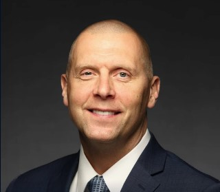
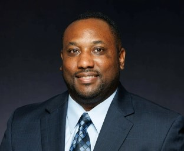
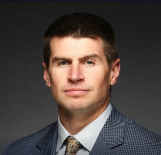
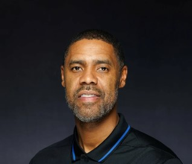
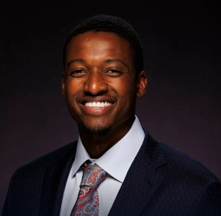
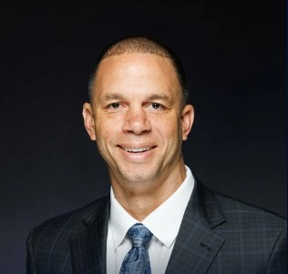

Mark Pope
Head Coach

Alvin Brooks III
Associate Head Coach
Mark Fox
Associate Coach

Cody Fueger
Assistant Coach

Jason Hart
Assitant Coach

Mikhail McLean
Assistant Coach

Nick Robinson
Director of Men's Basketball Operations
Randy Towner
Head Strength Coach
Brandon Wells
Head Athletic Trainer